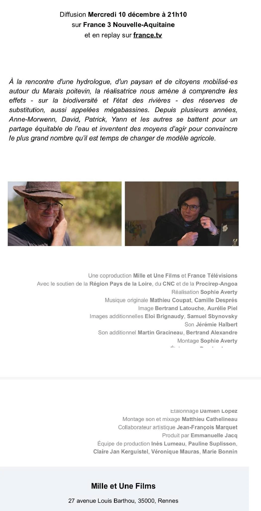

Annonce culturelle relayée
À Fors, l’avant-première de « Y aura-t-il de l’eau cet été ? »
Date indiquée par Facebook · 29 novembre 2025
Repères éditoriaux
Mille et Une Films avait annoncé l’avant-première du documentaire de Sophie Averty le jeudi 4 décembre 2025 à 20 h 30, à L’Aparté, à Fors. La réalisatrice et plusieurs protagonistes étaient annoncés. L’entrée était gratuite dans la limite des places disponibles.
Texte conservé avec la publication
Jeudi 4 décembre à 20h30
Salle de L'Aparté -Espace des Arts
79230 Fors
Projection en avant-première du film
" Y aura-t-il de l'eau cet été ? "
En présence de la réalisatrice et de quelques-un·es des protagonistes du film.

Sources
Archive rouge · export Facebook · AR-0002-FB-00942
À lire aussi · Sainte-Soline. La vidéo du rassemblement du 3 décembre à Poitiers